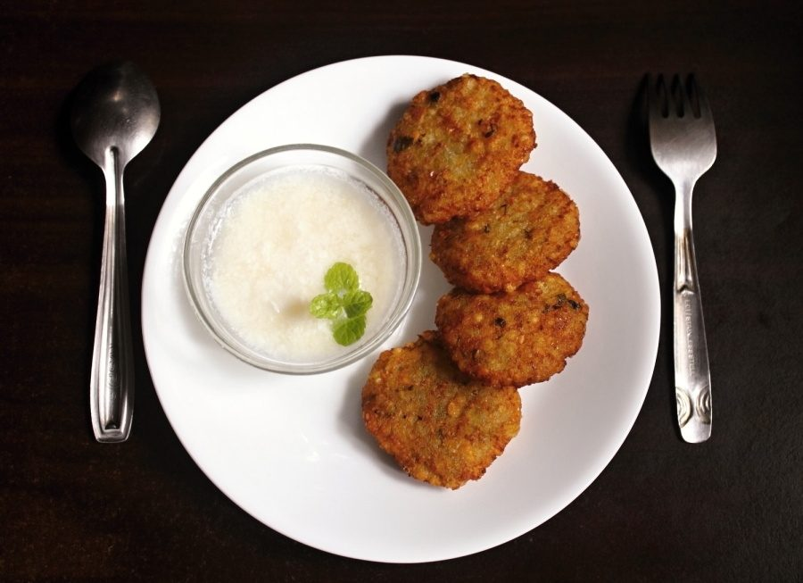

Sabudana Vada
crisp fasting fritters of sago and crushed peanut with a soft potato middle

Start the day before. The soaking alone is 5 hr, against 45 min of actual work.
Contains: peanuts
Checked against the ingredient list for ten allergens: milk, egg, fish, crustaceans, tree nuts, peanuts, sesame, mustard, soy and gluten. Brands vary, so read the label on anything new to you.
Ingredients
Quantities for 4.
- 1 cup, soaked Sabudana
- 2 medium (250g), boiled, cooled and coarsely mashed Potato
- 3/4 cup, roasted, skinned and coarsely ground Peanutthe body of the vada, not a garnish
- 3, finely chopped Green Chilli
- 2cm piece, grated Gingeroptional
- 1 tsp Cumin Seeds
- 1/4 cup, chopped Coriander Leaves
- 1/2 Lemon
- 1 tsp Sugarthe Maharashtrian balance, do not skipoptional
- 500ml, for deep frying Groundnut Oil
- to taste Salt
Cookware
stovetop, kadhai
Before you start
- Rinse the sabudana until the water runs clear, then soak in water that just covers it by 1cm for 5-6 hours or overnight. Drain any standing water in the morning.
- A properly soaked pearl crushes to a paste between finger and thumb with no hard white centre. If it does not, sprinkle 2 tbsp water over and wait another hour.
- Boil and cool the potatoes fully. Warm potato releases steam that makes the vada burst in the oil.
Method
- Check the soaked sabudana: press a pearl between your fingers. It should flatten completely with no opaque core.Undersoaked sago stays gritty however long you fry, and oversoaked sago turns the mix to glue. This check matters more than the timing.
- Combine the drained sabudana, mashed potato, ground peanut, green chilli, ginger, cumin seeds, coriander, lemon juice, sugar and salt with your hands.
- Squeeze a handful. It should hold together without cracking. If it crumbles, mash in a little more potato; if it is sticky, add 2 tbsp more ground peanut.
- Divide into 12 balls and flatten each into a 6cm disc about 1.5cm thick, smoothing the edges so there are no cracks.Cracked edges are where oil gets in and the vada breaks apart. Take an extra second on each one.
- Heat the oil to medium. A pinch of the mixture should rise steadily in about 4 seconds, not instantly.
- Fry 3 or 4 vada at a time for 4-5 minutes, turning once, until deep gold and hard-crisp on the outside.High heat browns them while the middle is still raw sago. Keep the oil at a steady medium.
- Drain on paper and rest 2 minutes. They crisp further as they cool slightly.
- Serve hot with peanut chutney or plain yogurt (yogurt makes it non-vegan).
Storage
Best within an hour of frying. The uncooked mixture keeps 24 hours refrigerated and shapes better cold; fried vada can be revived in a 180C oven for 6 minutes but never in the microwave.
Nutrition Medium estimate
Low protein: 9 g a serving, 7% of the calories
| Per serving152 g | Per 100 g | |
|---|---|---|
| Calories | 502 kcal | 331 kcal |
| Protein | 8.7 g | 6 g |
| Carbohydrate | 51.1 g | 34 g |
| of which sugars | 4.4 g | 3 g |
| Fibre | 4.2 g | 3 g |
| Fat | 31.1 g | 20 g |
| of which saturated | 4.7 g | 3 g |
| of which unsaturated | 24.7 g | 16 g |
Ingredients given to taste count as zero, so the real figures run a little higher. Estimated from raw ingredients using USDA FoodData Central.
Times, yields, allergens and nutrition are guidance. Use your own judgement on doneness and on storing. More in About.